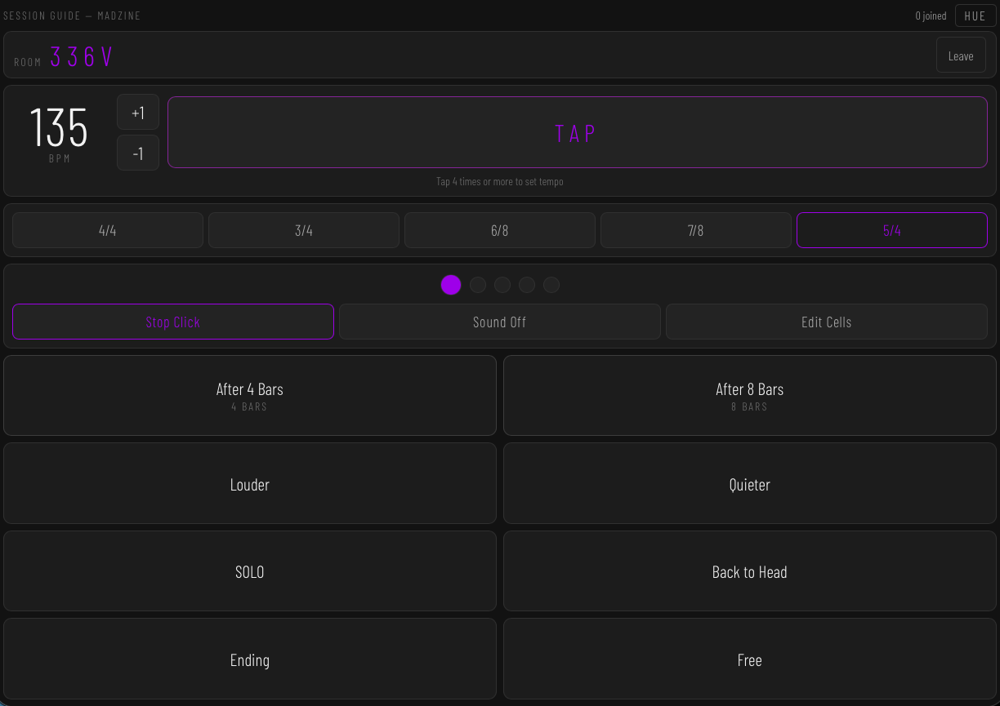
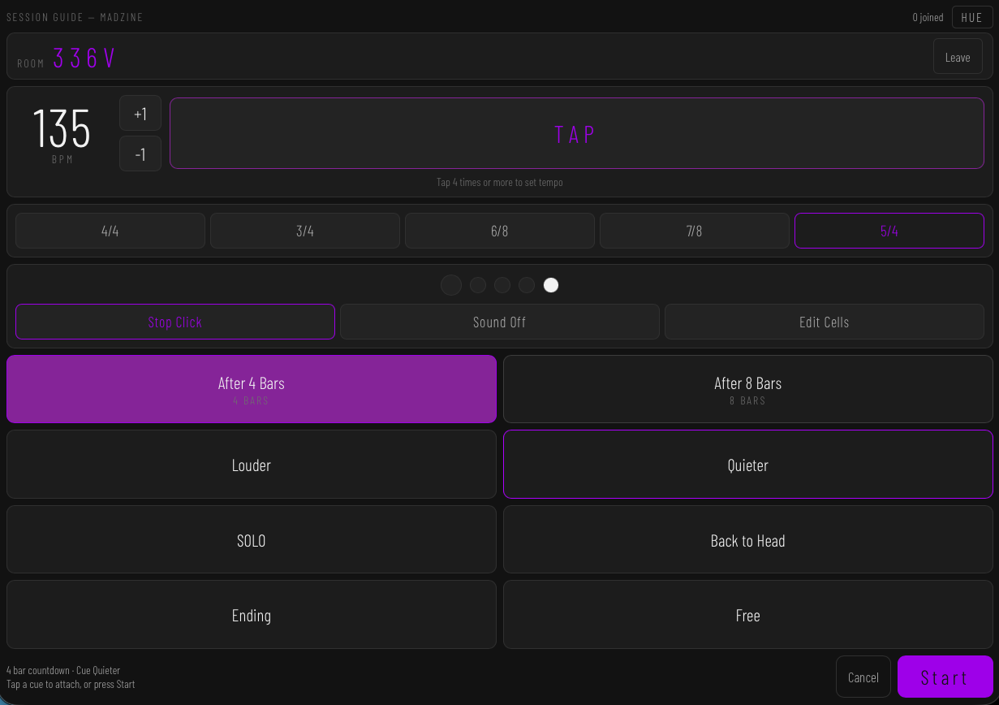
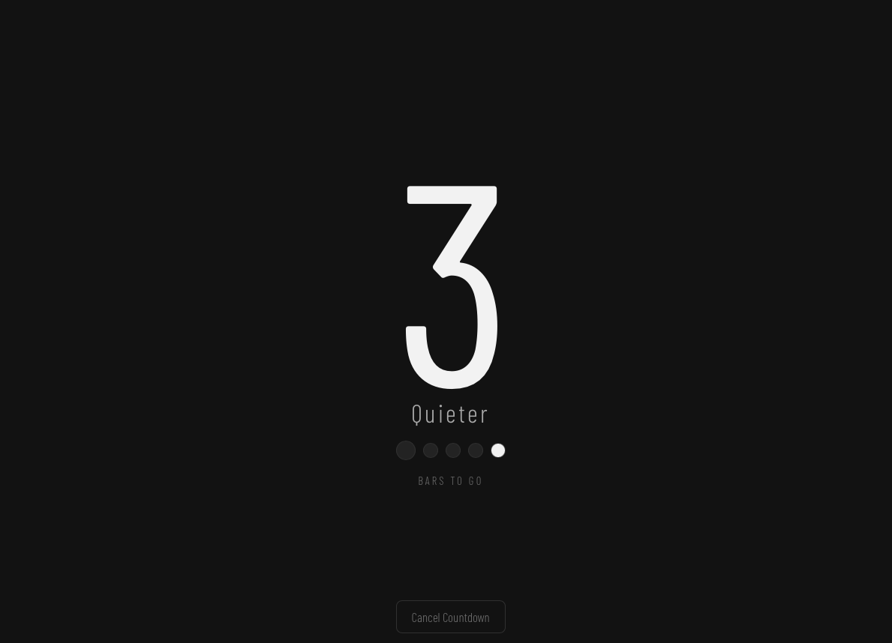
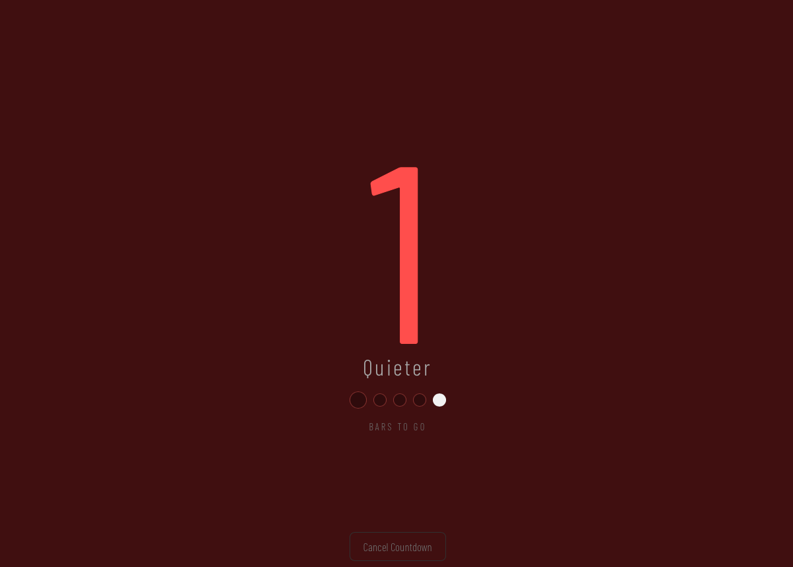
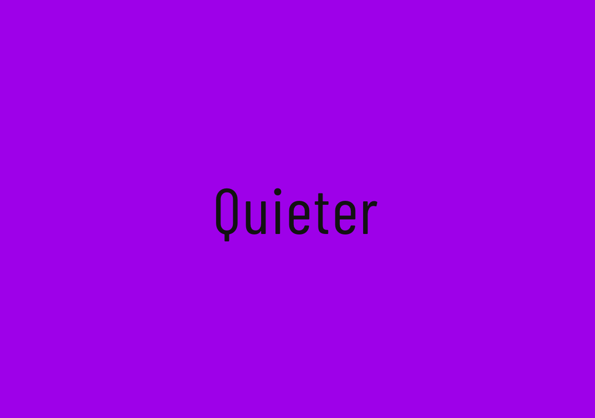

功能介紹
Session Guide 是為樂團即興與現場演出設計的瀏覽器工具。團長在手機上發出指令，所有團員的手機同步顯示，取代排練與演出中不易傳達的手勢與眼神。
團長建立房間後會得到一組四字元房號，團員輸入房號即可加入。連線透過 WebRTC 點對點建立，不需要伺服器轉送資料。另有本地模式，不連線也能單機當視覺節拍器使用。
速度以 Tap Tempo 敲擊設定，取最近四次間隔平均計算 BPM，並支援 4/4、3/4、6/8、7/8、5/4 五種拍號。節拍器為純視覺圓點，拍數對應拍號分子，第一拍以強調色標示，另可選擇開啟提示音。
指令以自訂格子發送，預設包含「變吵」「變安靜」「SOLO」「回主題」等，可自行改字、新增與刪除，設定保存於瀏覽器。指令分兩種：即時指令按下後立刻在所有人畫面全螢幕閃示；小節數指令則進入倒數，剩餘小節以超大字顯示，最後一小節轉為紅色警示，歸零時閃示指令內容。
各裝置的節拍與倒數皆在本地依時間戳推算，不逐拍依賴網路，並以定期校時修正裝置間的時鐘差。介面為深色極簡設計，支援繁體中文、英文、日文，並在演出期間透過 Wake Lock 保持螢幕常亮。





Demo
特色一覽
- WebRTC 點對點連線，四字元房號加入，無需帳號
- Tap Tempo 設定速度，全員同步
- 五種拍號：4/4、3/4、6/8、7/8、5/4
- 圖像式節拍器，第一拍強調，提示音可選
- 指令由修飾格與動作格組合：立刻、逐漸 N 小節、N 小節後
- 漸變指令：橫跨數小節的漸強、漸弱、漸快、漸慢，全螢幕進度顯示
- 每人加入時可選可下指令或只跟隨，演出中可交棒
- 小節倒數全螢幕顯示，最後一小節紅色警示
- 本地模式，離線可當單機視覺節拍器
- Wake Lock 螢幕常亮，適合現場演出
- 三語介面（繁中 / EN / JP）
技術資訊
- 平台
- Web (iOS Safari, Chrome)
- 開發語言
- HTML / CSS / JavaScript
- Network
- WebRTC (PeerJS)
- Audio
- Web Audio API
- License
- Open source